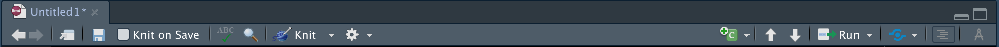
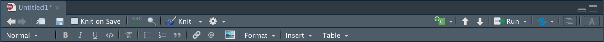
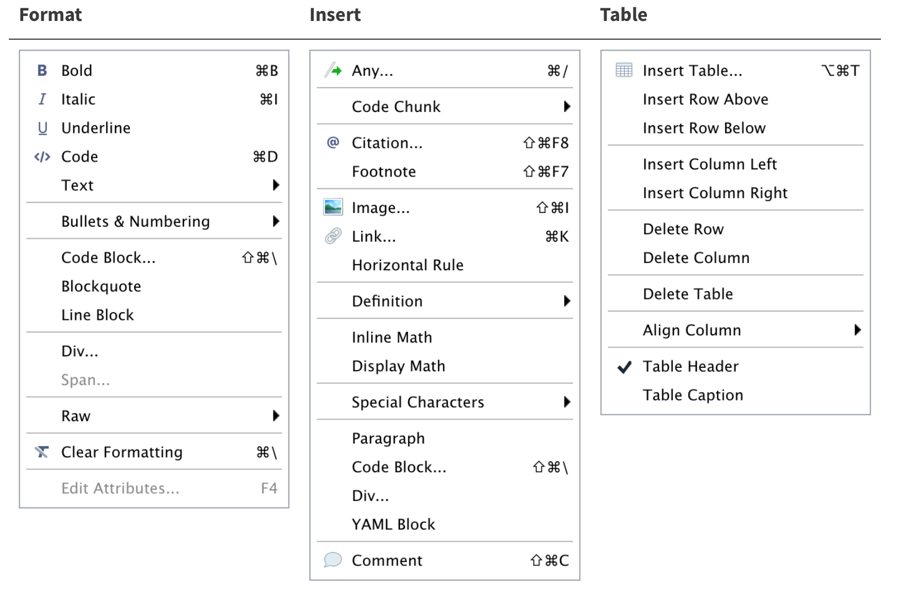
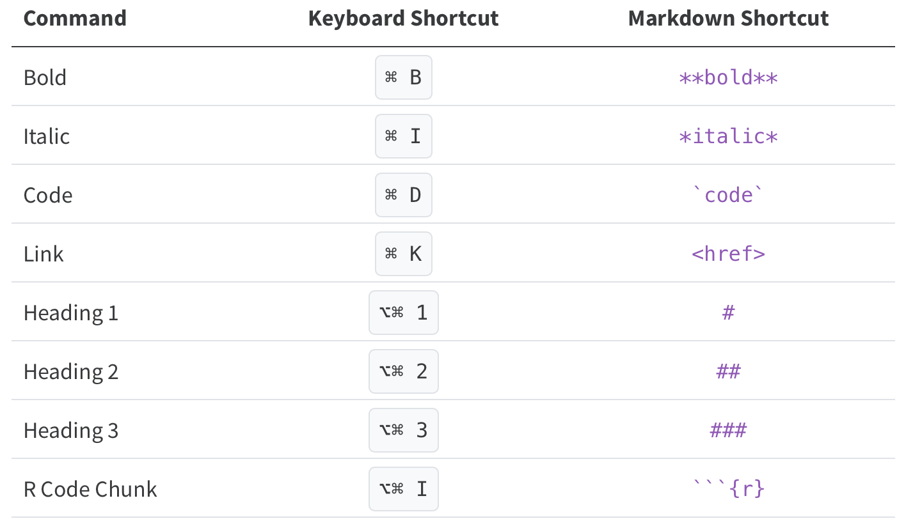

Have you ever wanted to take a peek at your knit markdown file without actually hitting knit… or wish you could make some final tweaks to your file in it’s visual form? Well say hello to RStudio’s new Visual Markdown Editor!
To start, you will need to have RStudio v1.4 or higher downloaded. To find the latest version of RStudio, visit here.
Once you open a new Markdown file, you’ll notice a new icon in the far right corner.

After pressing the compass button, you’ll notice a new array of editor buttons.

Look familiar? Lots of options you might be familiar with from working in Microsoft Word/Google Docs are here! Now there’s no need to remember that **bold** makes bold or _italics_ makes italics.
The toolbar includes buttons for the most commonly used formatting commands, but additional commands are available on the Format, Insert and Table drop down menus.

There are also several keyboard shortcuts for quick access, see below:

Looking for more? Check out this how to from RStudio.